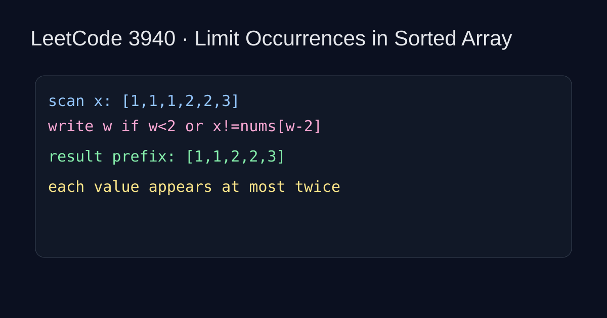

LeetCode 3940: Limit Occurrences in Sorted Array (Two Pointers)
LeetCode 3940Source: https://leetcode.com/problems/limit-occurrences-in-sorted-array/

English
Because the array is already sorted, equal values are contiguous. We keep a write pointer w and scan values one by one. A value can be written if w < 2 (first two positions) or it is different from nums[w-2]. This guarantees each value appears at most twice in the prefix nums[0..w-1].
Complexity: O(n) time, O(1) extra space.
class Solution { public int removeDuplicates(int[] nums) { int w = 0; for (int x : nums) { if (w < 2 || x != nums[w - 2]) nums[w++] = x; } return w; } }func removeDuplicates(nums []int) int { w := 0; for _, x := range nums { if w < 2 || x != nums[w-2] { nums[w] = x; w++ } } return w }class Solution { public: int removeDuplicates(vector<int>& nums) { int w = 0; for (int x : nums) { if (w < 2 || x != nums[w - 2]) nums[w++] = x; } return w; } };class Solution:
def removeDuplicates(self, nums: list[int]) -> int:
w = 0
for x in nums:
if w < 2 or x != nums[w - 2]:
nums[w] = x
w += 1
return wfunction removeDuplicates(nums) { let w = 0; for (const x of nums) { if (w < 2 || x !== nums[w - 2]) nums[w++] = x; } return w; }中文
数组已排序，相同数字一定连续。用写指针 w 原地覆盖：当 w < 2 时前两个元素总能保留；否则仅当当前值与 nums[w-2] 不同才写入。这样可保证结果前缀中每个值最多出现 2 次。
复杂度：时间 O(n)，额外空间 O(1)。
class Solution { public int removeDuplicates(int[] nums) { int w = 0; for (int x : nums) { if (w < 2 || x != nums[w - 2]) nums[w++] = x; } return w; } }func removeDuplicates(nums []int) int { w := 0; for _, x := range nums { if w < 2 || x != nums[w-2] { nums[w] = x; w++ } } return w }class Solution { public: int removeDuplicates(vector<int>& nums) { int w = 0; for (int x : nums) { if (w < 2 || x != nums[w - 2]) nums[w++] = x; } return w; } };class Solution:
def removeDuplicates(self, nums: list[int]) -> int:
w = 0
for x in nums:
if w < 2 or x != nums[w - 2]:
nums[w] = x
w += 1
return wfunction removeDuplicates(nums) { let w = 0; for (const x of nums) { if (w < 2 || x !== nums[w - 2]) nums[w++] = x; } return w; }
Comments